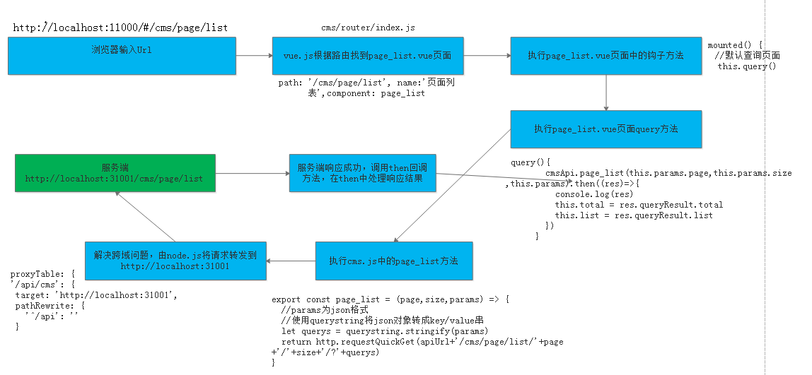

CMS前端开发
1 Webpack研究
参考Webpack学习
2 CMS前端工程创建
2.1 导入系统管理前端工程
CMS系统使用Vue-cli脚手架创建， Vue-cli是Vue官方提供的快速构建单页应用的脚手架，github地址：https://github.com/vuejs/vue-cli（有兴趣的同学可以参考官方指导使用vue-cli创建前端工程），本项目对Vue-cli创建的工程进行二次封装，下边介绍CMS工程的情况。
2.2.1 工程结构
如果我要基于Vue-Cli创建的工程进行开发还需要在它基础上作一些封装，导入课程资料中提供Vue-Cli封装工程。
将课程资料中的xc-ui-pc-sysmanage.7z拷贝到UI工程目录中，并解压，用WebStorm打开xc-ui-pc-sysmanage目录。
2.2.2 package.json
package.json记录了工程所有依赖，及脚本命令：
开发使用：npm run dev
打包使用：npm run build
2.2.3 webpack.base.conf.js
webpack.base.conf.js就是webpack的webpack.config.js配置文件，在此文件中配置了入口文件及各种Loader。
webpack是通过vue-load解析.vue文件，通过css-load打包css文件等。
2.2.4 main.js
main.js是工程的入口文件，在此文件中加载了很多第三方组件，如：Element-UI、Base64、VueRouter等。
index.html是模板文件。
2.2.5 src目录
src目录下存放页面及js代码。

assets：存放一些静态文件，如图片。
base：存放基础组件
base/api：基础api接口
base/component：基础组件，被各各模块都使用的组件
base/router：总的路由配置，加载各模块的路由配置文件。
common：工具类
component：组件目录，本项目不用。
mock：存放前端单元测试方法。
module：存放各业务模块的页面和api方法。
下级目录以模块名命名，下边以cms举例：
cms/api：cms模块的api接口
cms/component：cms模块的组件
cms/page： cms模块的页面
cms/router：cms模块的路由配置
statics：存放第三方组件的静态资源
vuex：存放vuex文件，本项目不使用
static：与src的平级目录，此目录存放静态资源
它与assets的区别在于，static目录中的文件不被webpack打包处理，会原样拷贝到dist目录下。
2.2 单页面应用介绍
什么是单页应用？
引用百度百科：

单页面应用的优缺点：
优点：
1、用户操作体验好，用户不用刷新页面，整个交互过程都是通过Ajax来操作。
2、适合前后端分离开发，服务端提供http接口，前端请求http接口获取数据，使用JS进行客户端渲染。
缺点：
1、首页加载慢
单页面应用会将js、 css打包成一个文件，在加载页面显示的时候加载打包文件，如果打包文件较大或者网速慢则用户体验不好。
2、SEO不友好
SEO（Search Engine Optimization）为搜索引擎优化。它是一种利用搜索引擎的搜索规则来提高网站在搜索引擎排名的方法。目前各家搜索引擎对JS支持不好，所以使用单页面应用将大大减少搜索引擎对网站的收录。
总结：
本项目的门户、课程介绍不采用单页面应用架构去开发，对于需要用户登录的管理系统采用单页面开发。
3 CMS前端页面查询开发
3.1 页面原型
3.1.1 创建页面
3.1.1.1 页面结构
在model目录创建 cms模块的目录结构
在page目录新建page_list.vue，扩展名为.vue。
.vue文件的结构如下：
1 | <template> |
在页面的template中填写 “测试页面显示…”。
注意：template内容必须有一个根元素，否则vue会报错，这里我们在template标签内定义一个div。
3.1.1.2 页面路由
在cms目录下创建page_list.vue页面。
现在先配置路由，实现url访问到页面再进行内容完善与调试。
1、在cms的router下配置路由
1 | import Home from '@/module/home/page/home.vue'; |
2、在base目录下的router导入cms模块的路由
1 | // // 导入路由规则 |
3、测试
启动工程，刷新页面，页面可以外正常浏览，并且看到“测试页面显示…”字样
3.1.2 Table组件测试
3.1.2.1 Element-UI介绍
本项目使用Element-UI来构建界面，Element是一套为开发者、设计师和产品经理准备的基于 Vue 2.0 的桌面端组件库。
Element-UI官方站点：http://element.eleme.io/#/zh-CN/component/installation
3.1.2.2 Table组件测试
本功能实现的页面列表，用户可以进行分页查询、输入查询条件查询，通过查看Element-UI库，我们需要Table 表格、Form表单 及Pagination 分页组件。
进入Element-UI官方，找到Table组件，拷贝源代码到vue页面中，如下：
1 | <template> |
测试：
通过查看代码发现：
el-table组件绑定了tableData模型数据。
tableData模型数据在script标签中定义。
3.1.3页面内容完善
根据需求完善页面内容，完善列表字段，添加分页组件。
1 | <template> |
2、测试
3.2 Api调用
3.2.1 Api方法定义
在cms模块的api目录定义cms.js，
在cms.js中定义如下js方法，此方法实现http请求服务端页面查询接口。
1 | //public是对axios的工具类封装，定义了http请求方法 |
axios实现了http方法的封装，vue.js官方不再继续维护vue-resource,推荐使用 axios。
3.2.2 Api调用
前端页面导入cms.js，调用js方法请求服务端页面查询接口。
1）导入cms.js
1 | import * as cmsApi from '../api/cms' |
在query方法中调用 page_list方法
1 | //查询 |
3.3 跨域问题解决
测试 上边的代理 ，结果 报错如下 ：
No ‘Access-Control-Allow-Origin’ header is present on the requested resource. Origin ‘http://localhost:11000' is therefore not allowed access.
原因：浏览器的同源策略不允许跨域访问，所谓同源策略是指协议、域名、端口相同。
解决：采用proxyTable解决。
proxyTable是什么？
vue-cli提供的解决vue开发环境下跨域问题的方法，proxyTable的底层使用了http-proxy-middleware（https://github.com/chimurai/http-proxy-middleware），它是http代理中间件，它依赖node.js，基本原理是用服务端代理解决浏览器跨域：
cms跨域解决原理：
1、访问页面http://localhost:11000/
2、页面请求http://localhost:11000/cms
由于url由http://localhost:31001/cms...改为“http://localhost:11000/cms.“，所以不存在跨域
3、通过proxyTable由node服务器代理请求 http://localhost:31001/cms.
服务端不存在跨域问题
具体的配置如下：
1）修改api方法中url的定义
请求前加/api前缀
1 | //public是对axios的工具类封装，定义了http请求方法 |
2）在config/index.js下配置proxyTable。
以/api/cms开头的请求，代理请求http://localhost:31001
1 | '/api/cms': { |
3.4 分页查询测试
1、定义分页视图
使用v-on监听更改分页事件
1 | <el-pagination |
2、定义数据模型对象
1 | data() { |
3、定义分页方法，接收页码参数
1 | //分页查询，接收page页码 |
修改完毕，测试分页效果。
3.5 进入页面立即查询
目前实现的功能是进入页面点击查询按钮向服务端表求查询，实际的需求是进入页面立即查询。
如何实现？
这要用到vue的钩子函数，每个 Vue 实例在被创建时都要经过一系列的初始化过程——例如，需要设置数据监听、编译模板、将实例挂载到 DOM 并在数据变化时更新 DOM 等。同时在这个过程中也会运行一些叫做生命周期钩子的函数，这给了用户在不同阶段添加自己的代码的机会。

通常使用最多的是created和mounted两个钩子：
created：vue实例已创建但是DOM元素还没有渲染生成。
mounted：DOM元素渲染生成完成后调用。
本例子在两个方法的任意一个都满足需求：
添加如下代码：
1 | mounted() { |
重新刷新页面。
4 前后端请求响应流程小结
参考 “讲义–>前后端请求响应流程.png”，如下：

1、在浏览器输入前端url
2、前端框架vue.js根据url解析路由，根据路由找到page_list.vue页面
3、首先执行page_list.vue中的钩子方法
4、在钩子方法中调用query方法。
5、在query方法中调用cms.js中的page_list方法
6、cms.js中的page_list方法通过axios请求服务端接口
7、采用proxyTable解决跨域问题，node.js将请求转发到服务端(http://localhost:31001/cms/page/list)
8、服务端处理，将查询结果响应给前端
9、成功响应调用then方法，在then方法中处理响应结果，将查询结果赋值给数据模型中的total和list变量。
10、vue.js通过双向数据绑定将list数据渲染输出。